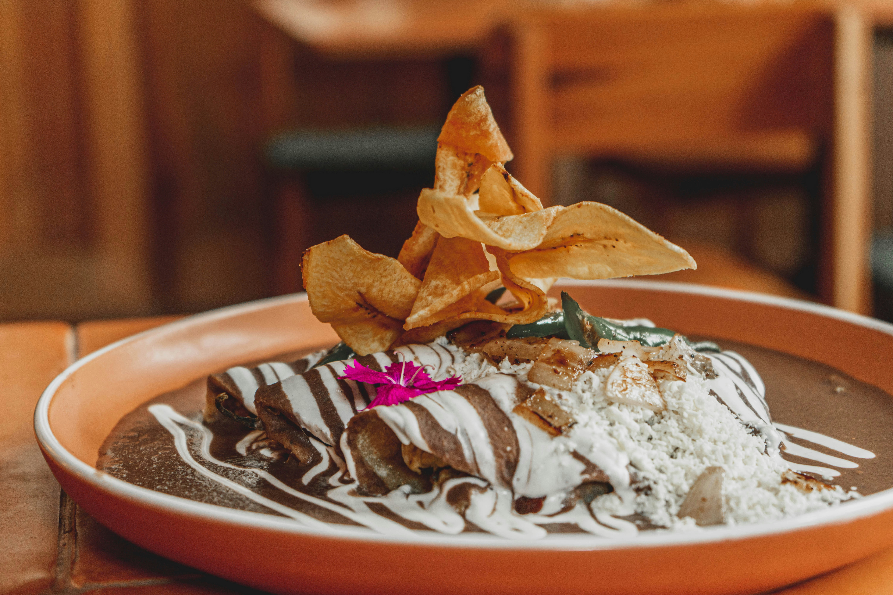
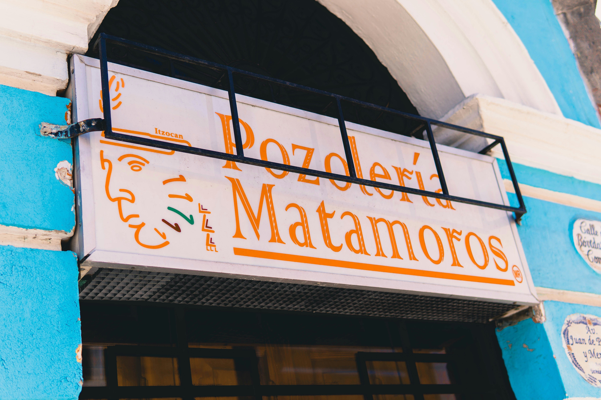
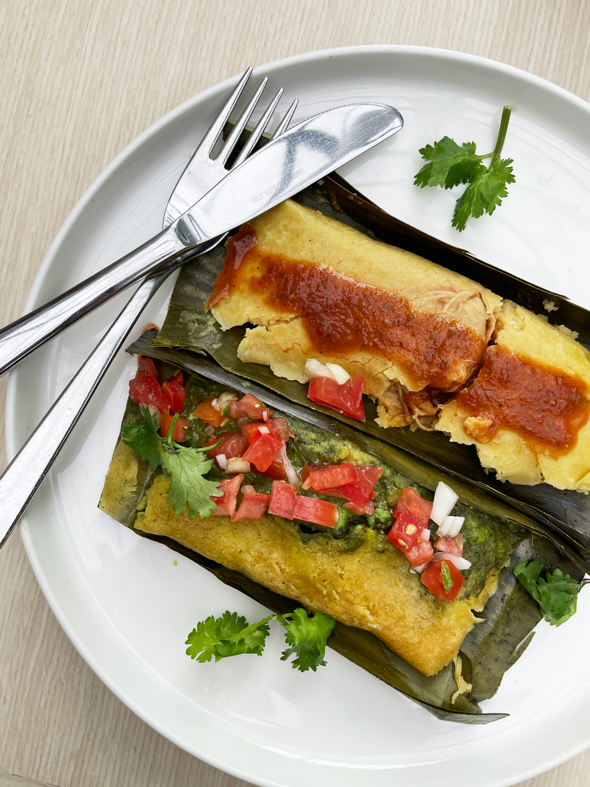
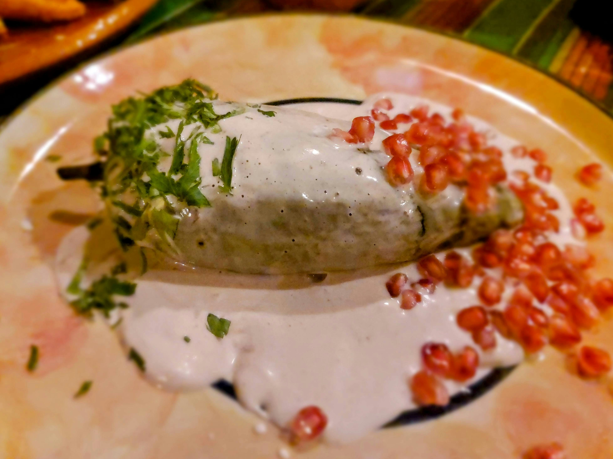
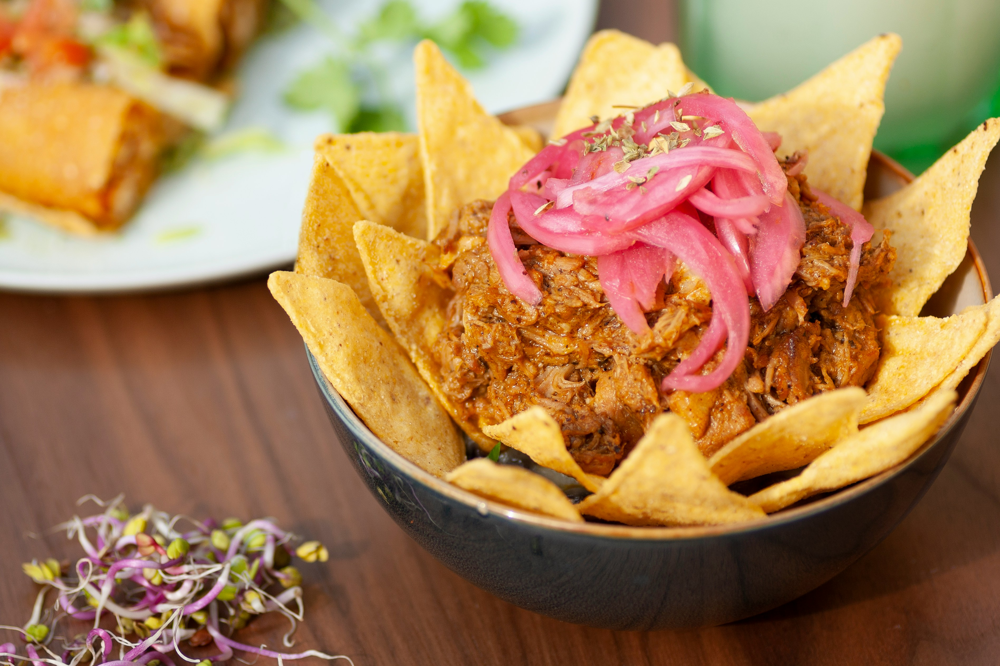

Tacos
Origen: México
Uno de los platillos más representativos de México, preparado con tortilla y diferentes tipos de carne, verduras y salsas.
Descubre los sabores y platillos tradicionales de México
Origen: México
Uno de los platillos más representativos de México, preparado con tortilla y diferentes tipos de carne, verduras y salsas.

Origen: Puebla
Salsa tradicional preparada con diferentes ingredientes y especias, conocida por su sabor complejo.

Origen: México
Caldo tradicional preparado principalmente con maíz nixtamalizado y carne, acompañado de diferentes ingredientes.

Origen: México
Preparación de masa de maíz rellena con diferentes ingredientes y cocida generalmente al vapor.

Origen: Puebla
Chile poblano relleno de picadillo y cubierto con salsa de nogada, decorado tradicionalmente con granada.

Origen: Yucatán
Platillo tradicional elaborado con carne de cerdo marinada con achiote y cocida lentamente.